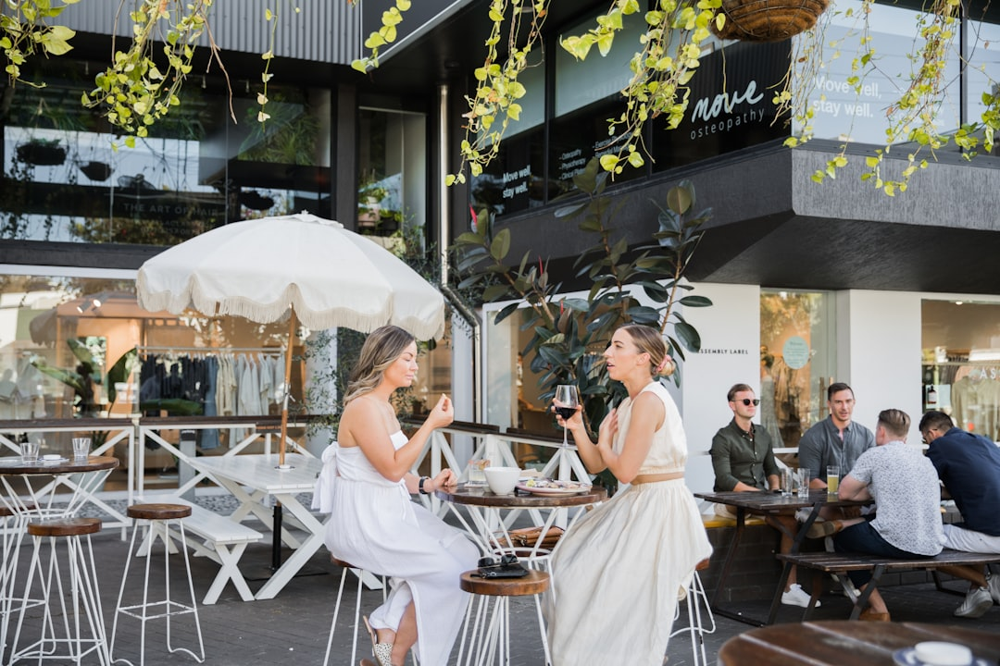

Best Brisbane Restaurants presents a Brisbane dining directory with 9 provider types, including Asian, Casual & Family, Fine Dining, Italian, Modern Australian, Seafood, Steak & Grill, Vegetarian & Vegan, and general Restaurants. The source page says users can search by category or location, read reviews, view photos, compare services and pricing, and contact venues directly. Featured listings include venues in Spring Hill, Brisbane City, Sunnybank and South Brisbane.
For diners comparing restaurants brisbane options, the useful starting point is not a single ranked list but a clear way to sort cuisine, location, occasion and booking confidence.
Restaurants Brisbane Explained
Best Brisbane Restaurants is presented as a directory for discovering dining venues across Brisbane, with search paths by category and location. The practical value is in narrowing choice before committing to a booking: cuisine first, then suburb fit, then the details shown on the venue profile.
The source page states that diners can read reviews, view photos, compare services and pricing, and get in touch directly by call, email, or quote form. That makes the directory most useful when you already have a dining need in mind, such as a family meal, a private function, a fine dining booking, or a cuisine specific night out.
The page also separates browsing from booking. It points readers to venue profiles and says current menus, trading details and booking availability should be checked with the venue's own published information where shown. For a diner, that is the right order: use the directory to shortlist, then confirm the live details before travelling.
Choosing By Occasion Instead Of Guesswork
The listed categories are broad enough to support different dining decisions without pretending every venue suits every moment. A quick lunch, a group dinner, a special occasion and a dietary led search each need different checks. The directory labels can help you avoid comparing unlike options.
- Casual & Family: start here when the group needs easy ordering, a relaxed setting or a suburb based option.
- Fine Dining: use this category when the venue style, service level and booking expectations matter more than speed.
- Italian, Asian, Seafood, Steak & Grill, Vegetarian & Vegan: use cuisine categories when the meal style is already decided.
- Modern Australian: use this where the source page identifies that dining style, including the South Brisbane example named on the page.
If you are comparing more than one shortlist, keep the inputs consistent. Look at category, location, review volume, photos, menu availability and whether the profile gives enough information to contact the venue directly.
Location Signals That Actually Help
The location list on the source page is not just a set of suburb names. It shows how dining searches often work in Brisbane: a person may start with a suburb because travel time, parking, public transport, nearby events or group convenience affects the final choice.
Named examples on the page include Spring Hill, Brisbane City, Sunnybank, South Brisbane, Morningside, Teneriffe, Fortitude Valley, Newstead, West End, Woolloongabba and Bulimba. Those places are useful as filters only when they match the dining plan. A city booking may suit after work, while a South Brisbane option may be considered when a group is already planning to be near that side of the river.
For a broader crawl path, this Brisbane dining guide covers the same search theme from another index page. Use it as a second navigation point, not as a substitute for confirming menus, trading details or booking availability with the venue.
What To Check On A Venue Profile
A useful venue profile should answer enough questions to justify the next action. The source page's featured examples show profile summaries that may include suburb, category, cuisine style, review count, photos, services, menus, meal periods, private dining or functions, and a prompt to contact the venue.
Before booking, check whether the profile points to the current menu, whether the dining period you need is mentioned, and whether the venue appears suited to your group size. If a function or private dining need is involved, ask the venue directly about room setup, minimum spend, menu format and timing, rather than assuming those details from a category label.
Review counts and ratings can help with confidence, but they should not be the only filter. A venue with the right cuisine, suburb and booking fit may be more relevant than a higher profile venue that does not suit the occasion.
Who This Applies To
This guide is for diners who want a practical way to compare Brisbane restaurants without turning the search into a long scroll through unrelated options. It is especially relevant for people choosing between cuisine categories, checking a suburb based shortlist, or weighing a casual meal against a more formal booking.
It also applies to venue owners reviewing how their listing may be discovered. The source page says businesses can claim a free listing or upgrade to Pro for priority placement, photos and lead tracking. From a diner perspective, richer profile information is useful only when it helps answer real booking questions, such as menu fit, contact method, photos, services and location.
The safest final step is still direct confirmation. Use directory information to narrow the field, then confirm opening details, menu availability, booking requirements and any group dining conditions with the venue before making plans.
- Pick the dining need. Decide whether the meal is casual, cuisine led, fine dining, family focused or function related before comparing venues.
- Filter by category and place. Use the listed categories and Brisbane locations to make a smaller shortlist that matches the actual plan.
- Read the profile details. Check photos, reviews, services, menu references and contact options before deciding which venue deserves a call or booking request.
- Confirm live details. Contact the venue directly for current menus, trading details, availability and any group dining requirements.
| Search path | Best used when | Check before booking |
|---|---|---|
| Category first | You know the cuisine or dining style, such as Italian, seafood or vegetarian and vegan | Menu, photos, review signals and whether the venue suits the occasion |
| Location first | The suburb or meeting point matters more than cuisine | Travel fit, venue details, contact method and current availability |
| Profile first | A listed venue already looks promising | Current menu, trading details, booking process and group requirements |
Common questions
What categories are shown on the source directory? The source page lists Asian, Casual & Family, Fine Dining, Italian, Modern Australian, Restaurants, Seafood, Steak & Grill, and Vegetarian & Vegan as provider types.
Can I compare venues without paying to browse? Yes. The source page says users can read reviews, compare services and get quotes for free.
Are the featured venues all in one part of Brisbane? No. The featured examples on the source page include Spring Hill, Brisbane City, Sunnybank and South Brisbane.
Should I rely only on directory information before booking? No. Use the directory to shortlist venues, then confirm current menus, trading details and booking availability directly with the venue.
This guide covers category, location and profile checks for comparing Brisbane dining options before booking.